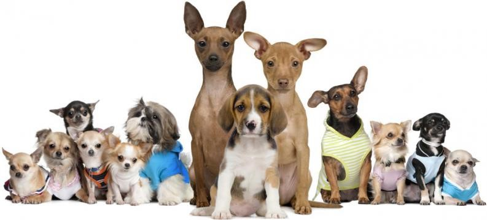

Husky Siberiano
El husky siberiano es una raza de perro de trabajo originaria del noreste de Siberia (Chukotka, Rusia). Esta raza presenta un acusado parecido con el lobo. Originalmente fue criado por la tribu chukchi, en la que se utilizaba como perro de compañía para pastorear a los ciervos, tirar de los trineos y mantener calientes a los niños; en la actualidad se encuentra en diversas zonas del mundo. Hay evidencias de que los siberianos han sido importados desde las tribus de koryak y kamchadal. Recientes análisis de ADN revelan que esta es una de las más antiguas razas de perros en el mundo.
Fueron llevados a Alaska desde el año 1904 y continuamente durante dos décadas debido a la fiebre del oro. Fueron empleados para tirar de trineos, y especialmente para la carrera All-Alaska Sweepstakes, que comprendía 657 km desde Nome hasta Candle ida y vuelta. De menor tamaño, más rápidos y de mayor resistencia que los perros comunes (entre 45 y 54 kg) usados en general, los siberianos inmediatamente dominaron la carrera.
En aquella época las hembras que nacían eran sacrificadas al nacer, y únicamente conseguían sobrevivir aquellas que presentaban una gran vitalidad, ya que eran utilizadas para la reproducción. Los machos que nacían también tenían que pasar una prueba de aptitud, corriendo la misma suerte que las hembras, ya que los chukchi eran muy estrictos. Los elegidos, en cambio, eran tratados de forma excepcional, con los mejores cuidados y la mejor alimentación. Es un perro de tamaño mediano. Acostumbrado a vivir en la nieve, tiene el pelaje mucho más denso y grueso que otras razas de perros. Es capaz de modificar drásticamente su pelaje según el lugar donde viva: puede cambiar entre pelo largo o más corto. El Husky siberiano puede tener estos colores: blanco, agoutí,negro,sable,rojo,gris y plata siendo estos dos últimos más frecuentes en las hembras. El husky ha sido descrito como un representante del comportamiento del ancestro del perro: el lobo, ya que muestra una amplia gama de comportamientos propios de su antepasado.9 Si el perro se adiestra y socializa adecuadamente desde que es joven —preferentemente cachorro—, puede ser una buena mascota de familia, ya que son cariñosos con personas de todas las edades.
A nivel de inteligencia, está posicionado en la escala con el número 45 de la clasificación de Stanley Coren acerca de la inteligencia de los perros. Una clase de entrenamiento de obediencia diaria de quince minutos será muy útil, Necesitan capacitación constante y les va bien con el adiestramiento canino de refuerzo positivo.
Es conocido por aullar en lugar de ladrar.
Comparación de un par de animales
| Raza | PINSCHER | CHIHUAHUA | BÓXER | LAVRADOR RETRIEVER |
|---|---|---|---|---|
| Peso | 14 y 20kg | 25kg | 29 y 36kg | |
| Estatura | 40 y 50 cm | 30 y 38 cm | 57 y 62 cm | |